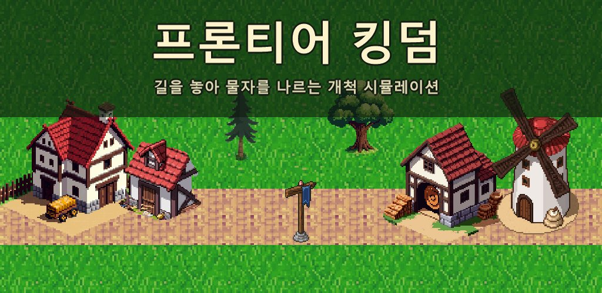
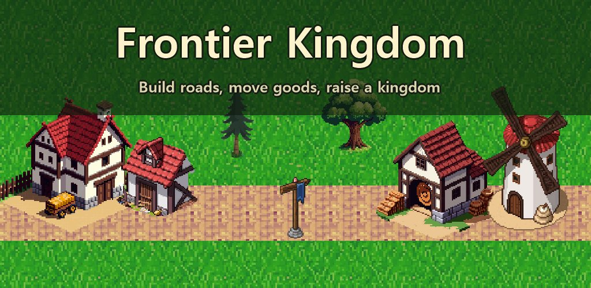
길을 놓아 물자를 나른다. 개척지를 왕국으로 키우는 건설·물류 시뮬레이션.
Lay roads, haul goods, grow a frontier camp into a kingdom. Build & supply sim.
Google Play Google Play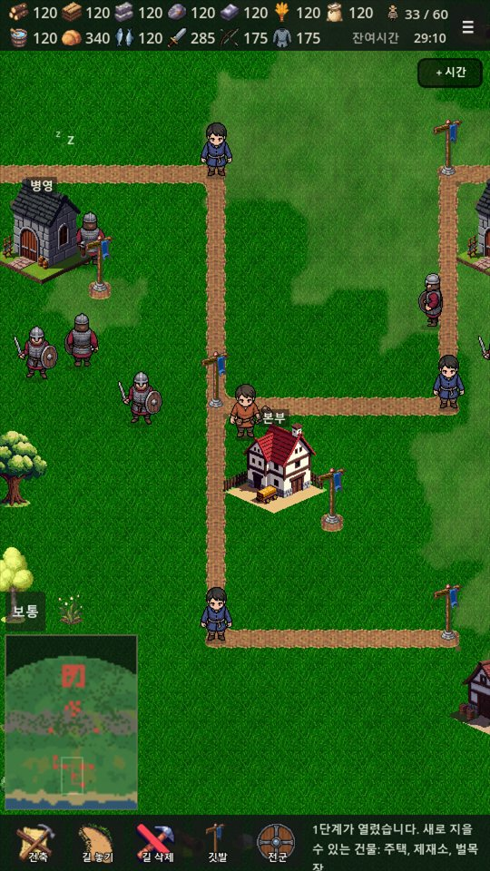
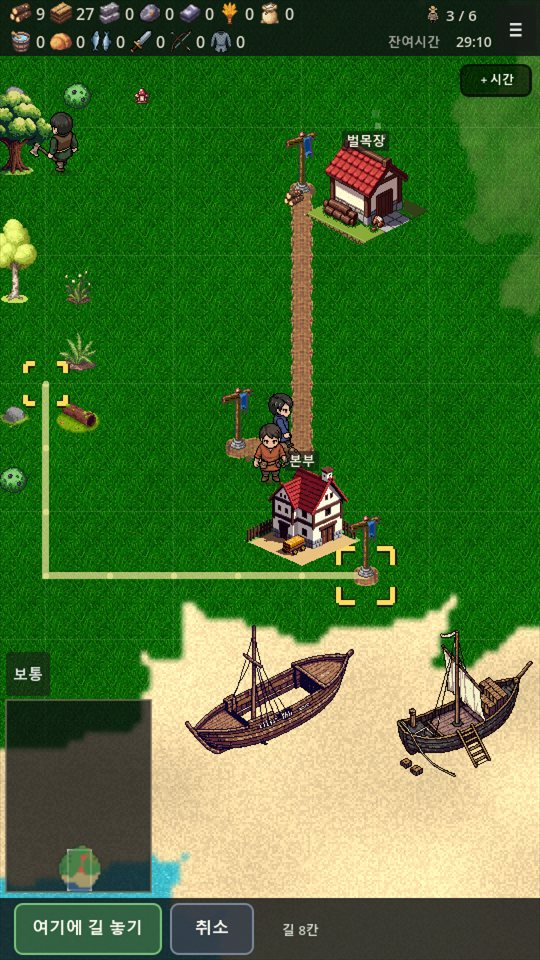
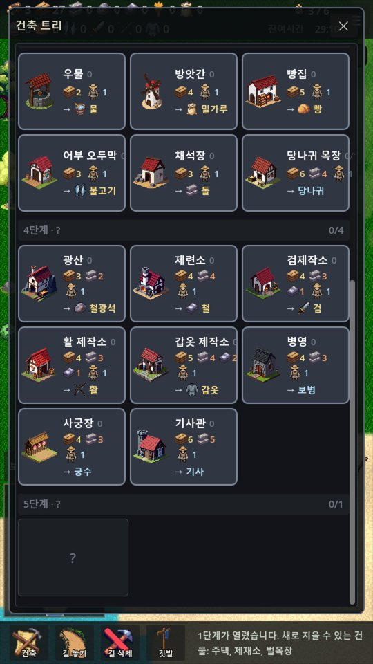
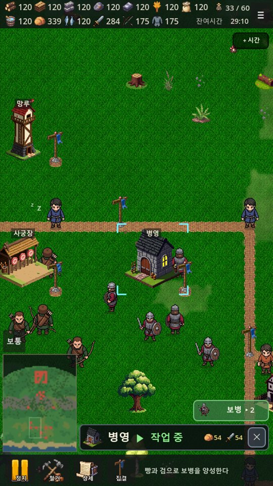
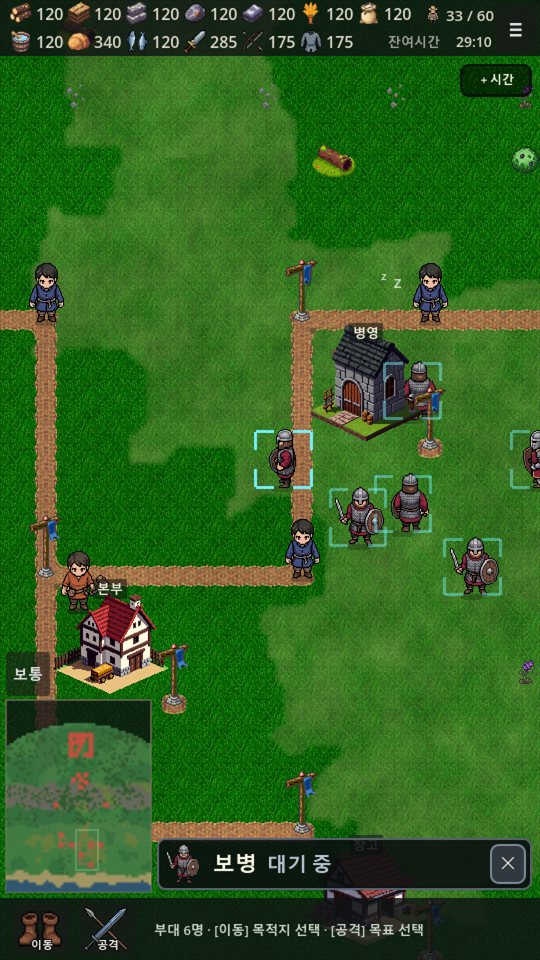
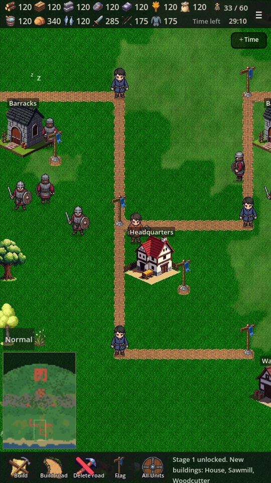
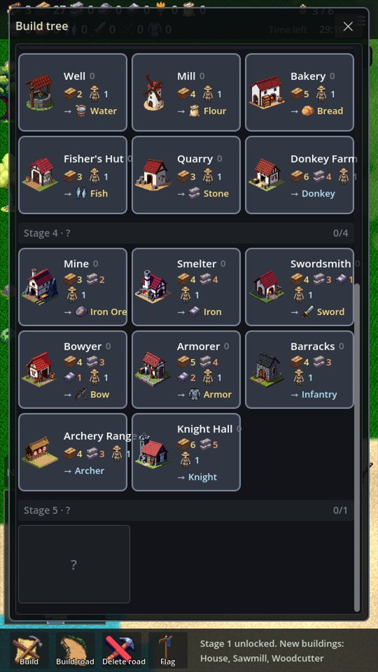
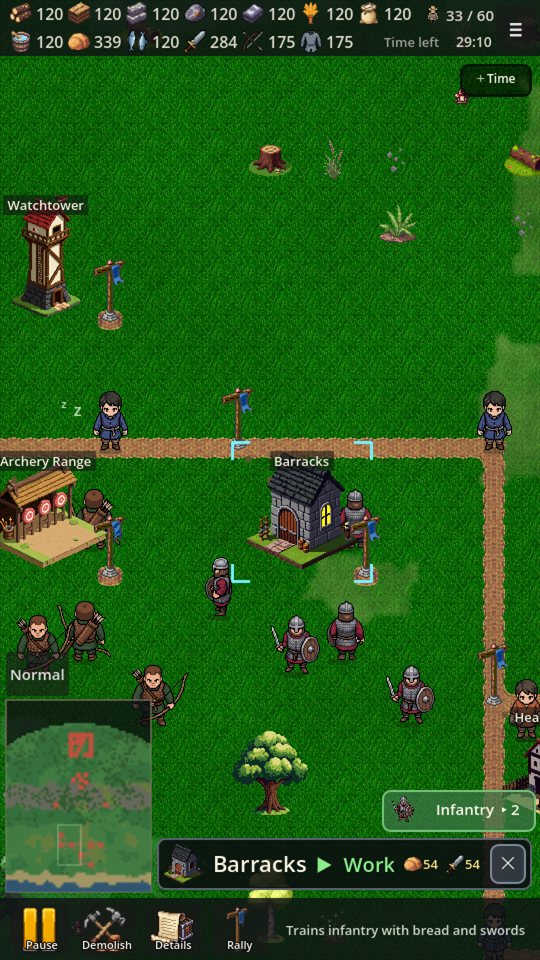
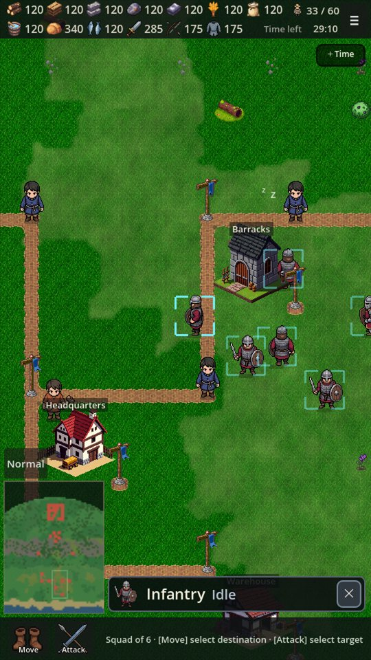
물자는 저절로 오지 않습니다. 나무를 베면 통나무가 벌목장 앞에 그대로 쌓이고, 제재소까지 길이 놓여 있어야 짐꾼이 짊어지고 걸어갑니다. 길이 없으면 아무것도 움직이지 않고, 길이 멀면 그만큼 늦게 닿습니다. 거리와 운송이 이 게임의 핵심입니다.
Goods do not teleport. Fell a tree and the log sits in front of the woodcutter's hut until a road reaches the sawmill and a carrier walks it there on foot. No road, nothing moves. A long road means a slow delivery. Distance and haulage are the whole game.
시작점과 끝점을 누르면 그 사이가 이어집니다. 나무, 바위, 물은 알아서 돌아갑니다. 원하는 곳으로 지나가게 하려면 중간 지점을 한 번 더 누르세요.
통나무가 널빤지가 되고, 밀이 밀가루를 거쳐 빵이 됩니다. 그 빵이 있어야 광부가 일합니다. 한 단계가 막히면 그 뒤가 전부 멈춥니다.
망루를 지으면 안개가 걷히고 영역이 넓어집니다. 넓힌 땅에만 지을 수 있으니 어느 쪽으로 넓힐지가 중요합니다.
병영, 사궁장, 기사관에서 병사를 양성합니다. 병사마다 필요한 물자가 다르고, 기사에게는 빵과 검과 갑옷이 들어갑니다.
북쪽의 서리 부족 거점을 점령하며 올라가세요. 무너진 옛 성터에 성을 다시 세우면 왕국을 되찾습니다.
세로 화면에서 한 손으로 플레이합니다. 결제로 앞서 나가는 방법이 없고, 모두가 같은 속도로 짓습니다.
Tap the start, tap the end, and the stretch between them is joined. Trees, rocks, and water are routed around automatically. Tap a point in the middle to make it pass where you want.
Logs become planks, and wheat becomes flour and then bread. The miner will not work until that bread reaches him. Choke one link and everything behind it stops.
Build a watchtower and the fog lifts as your territory grows. You can only build on your own land, so where you expand matters.
Train soldiers at the barracks, archery range, and knight hall. Each kind needs different goods. A single knight takes bread, a sword, and armor.
Capture Frost Tribe strongholds as you push north. Rebuild the castle on the ruined old castle site to reclaim the kingdom.
Play in portrait mode with one hand. Nothing can be bought to get ahead, and everyone builds at the same pace.
한국어와 영어를 지원합니다. 광고가 포함되어 있으며 인앱 결제는 없습니다. 한 번에 20분을 플레이할 수 있고, 시간이 다 되면 광고를 보고 30분을 연장할 수 있습니다. 시간은 기다리면 조금씩 회복됩니다. 광고 시청은 언제나 직접 선택하며, 게임 도중에 끼어드는 광고는 없습니다. 화면 아래에 배너 광고가 표시됩니다. 계정 가입 없이 바로 시작하고, 진행 기록은 기기에 저장됩니다.
Available in English and Korean. Contains ads, with no in-app purchases. Each session gives you 20 minutes of play. When it runs out, you can watch a rewarded ad for 30 more minutes, and the timer also refills slowly on its own. Watching is always your choice, and no ad interrupts play. A banner is shown at the bottom of the screen. No account needed; progress is saved on your device.